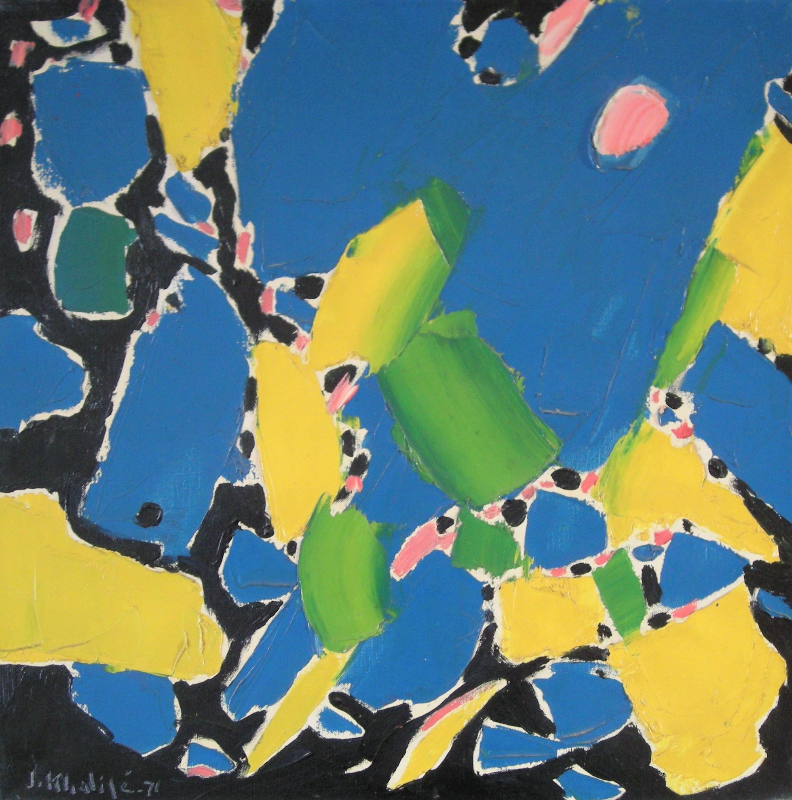

Jean Khalife
1923–1978
Artist Biography
Jean Khalife was born in Hadtoun in northern Lebanon and was to become one of Lebanon’s leading abstract artists. He studied from 1947-50 at the Academy of Fine Arts in Beirut and then from 1951-54 at the Ecole Nationale Superiore des Beaux Arts n Paris. His work was shown in a 1955 group exhibition at the Institute du Monde Arabe in Paris but his first solo exhibition was in Beirut in 1959 at the Geleria Camille Mounsef. After spending a year in Italy Khalife’s work from about 1961 moved towards the abstract, usually using bold colours. He represented Lebanon in all the Alexandria Biennales from 1960-66 and the Sao Paolo Biennales from 1967-71 and was a leading art teacher, initially at the Lebanese Academy of Fine Arts and later at the Lebanese University. Highlights of exhibitions abroad included the Ashmoleon Museum in Oxford, England in 1971 and other mixed shows in Toyko and Rome. The National Museum of Damascus in 1978 bought a large painting but the, at the height of his success, Khalife died of a heart attack. A Jean Khalife Museum was set up in his memory in his home village of Hadtoun and his work has continued to feature in exhibitions of Arab art from the period.

Untitled, 1971